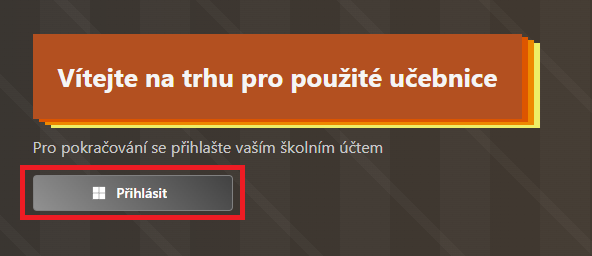
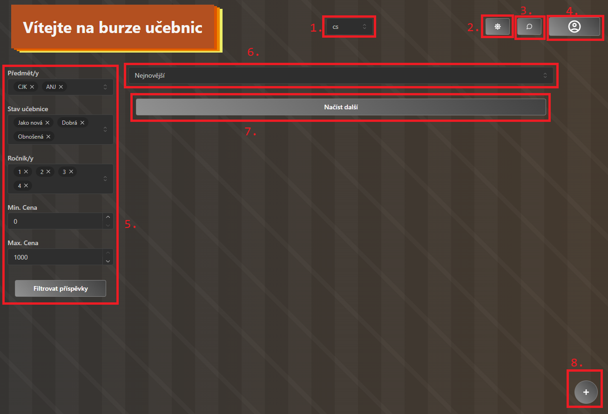

Burza učebnic
Jazyk / Language
Vítejte na burze učebnic!
Tato stránka slouží jako uživatelská nápověda a návod jak používat tuto aplikaci.
Přihlašování
Do navigace se hlásí s pomocí Microsoft Office 365 účtu (vašim školním účtem). Bude pravděpodobně z domény eskola.eu. Heslo pro účet je také stejné.

Níže jsou přesné kroky pro přihlášení:
- Na přihlašovací stránce aplikace klikněte na "Přihlásit". Budete přesměrováni na stránky Microsoft.
- Zde se přihlašte jako do jakékoli jiné aplikace (např. MS Teams). Při prvním přihlášení možná bude třeba dát aplikaci jistá oprávnění.
- Po přihlášení a odsouhlasení budete přesměrováni zpět do aplikace. Aplikaci může pár sekund trvat, než ověří vaše přihlášení
Hlavní stránka
Po přihlášení jste přesunuti na hlavní stránku aplikace. Zde máte přístup k několika funkcionalitám:

- Přepínání jazyka
- Přepínání mezi světlým a tmavým režimem
- Zobrazení okna příchozích zpráv
- Uživatelské menu (další funkcionality)
- Filtr zobrazených příspěvků
- Styl řazení příspěvků
- Tlačítko pro načítání dalších příspěvků
- Tlačítko pro přidání nového příspěvku
Přispěvky
Příspěvky slouží jako inzeráty oznamující o prodeji použité učebnice. Součástí takového příspěvku je:
- Titulek - Výstižný
- Doba trvání - Jak dlouho bude inzerát na stránce
- Předměty - Výběr předmětů, pro které je učebnice určena
- Stav učebnice - V jaké je učebnice přibližné kvalitě
- Ročníky - V jakých ročnících se učebnice používá
- Cena - Buď stacionární cena, nebo rozsah
- Fotky - Ilustrační obrázky vaší učebnice
- Kontakt - U příspěvku je jméno tvůrce a možnost ho kontaktovat
- Buď přes chat v MS Teams (Tlačítko Kontaktovat)
- Nebo přes jiné kanály (Tlačítko tři tečky)
Správa účtu
Pro správu svého účtu otevřete menu a zvolte Můj účet. Na této stránce má uživatel k dispozici dvě hlavní možnosti:
- Upravit své kontaktní informace
- Smazat svůj účet (a všechny vaše příspěvky)
Moje příspěvky
Uživatel má možnost spravovat své vlastní příspěvky. Na danou stránku se opět dostane přes menu, tlačítko Moje příspěvky. Jsou zde možné následující úkony:
- Prodloužit trvanlivost - Když chce uživatel prodloužit dobu trvání svého inzerátu
- Přidat info - Pokud by chtěl uživatel přidat další informace (dodatečné informace, změny ve stavu)
- Odebrat - Odebrat příspěvek (např. již prodané knihy)